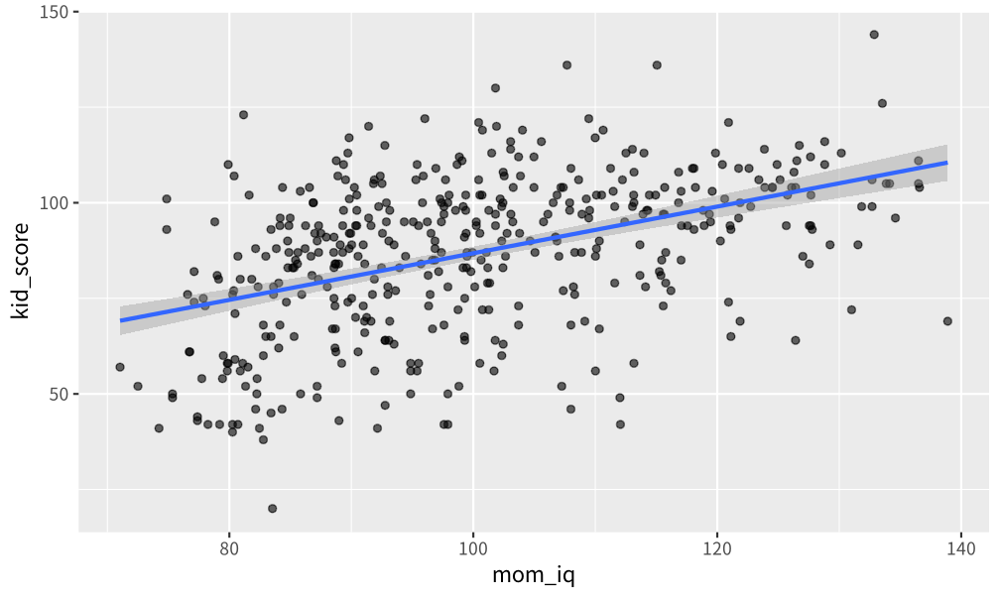
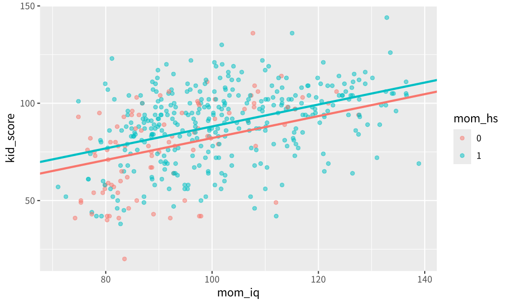
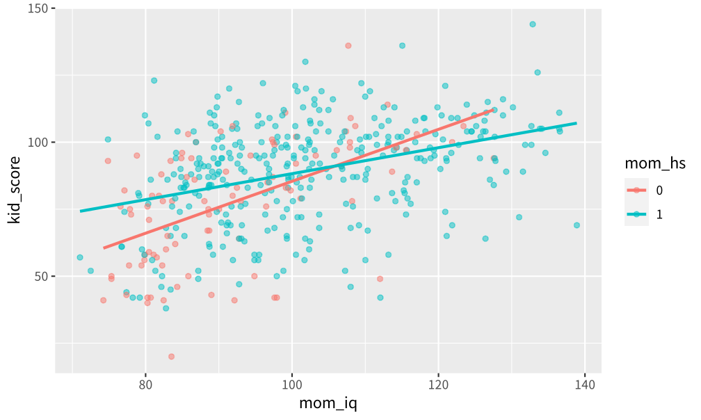
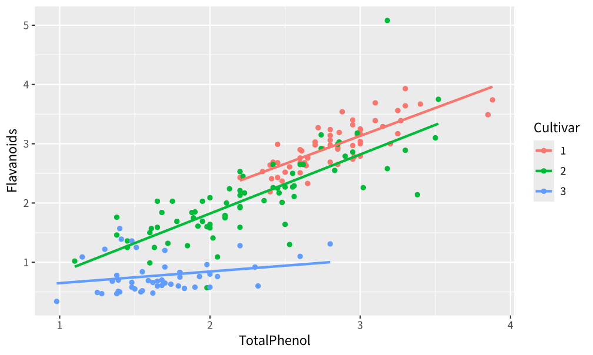
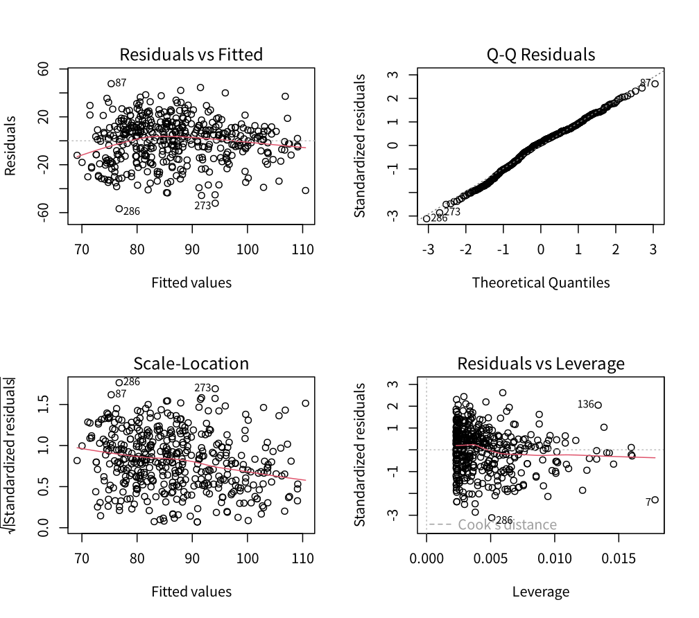
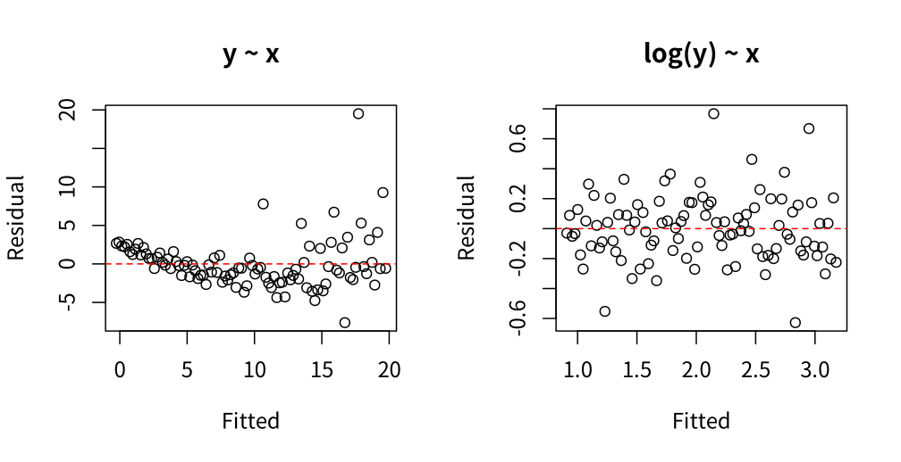
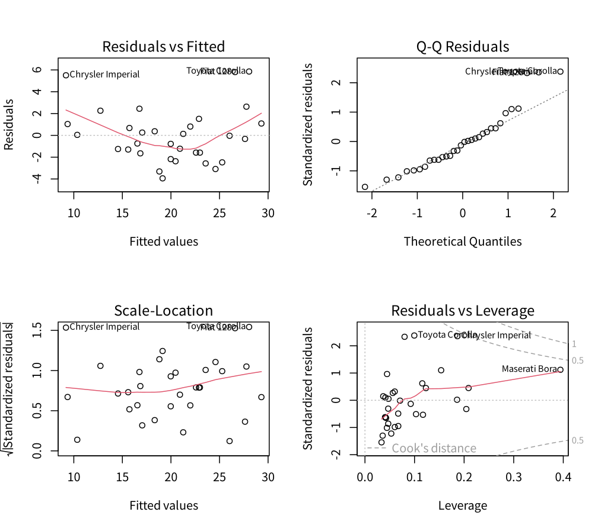
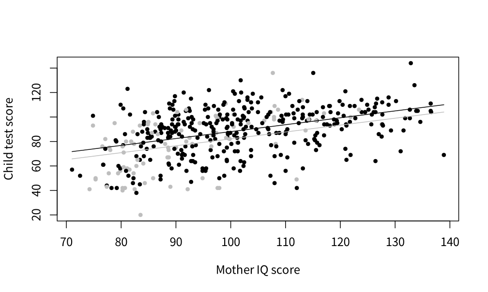
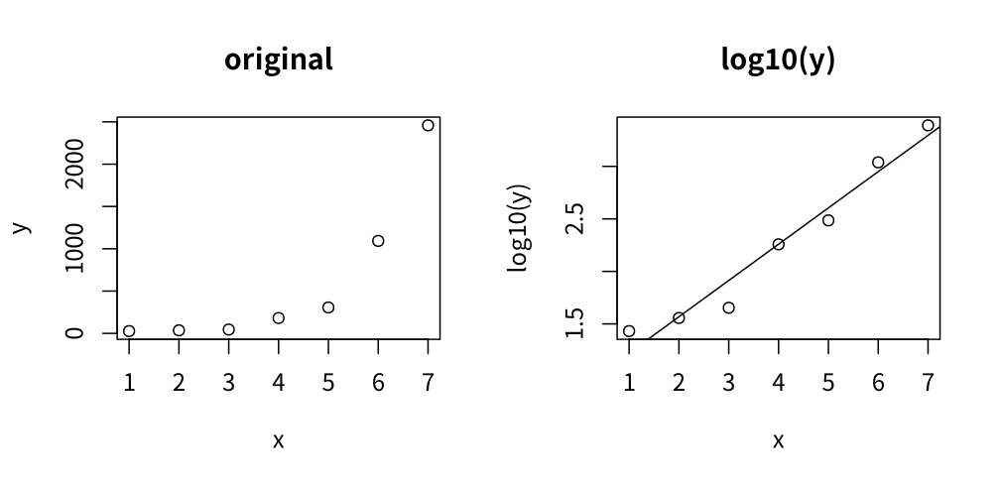
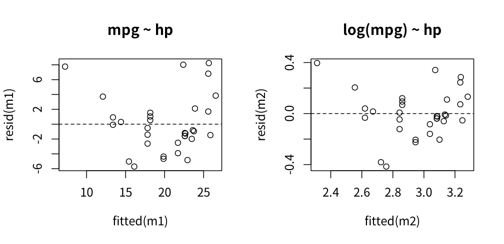

首頁 › 課程筆記 › 第 6 章 迴歸 （regression）用一個或多個預測變數 （predictor，自變數 X）來解釋或預測一個反應變數 （response，依變數 Y）。它有三個用途：推論 （X 和 Y 之間到底有沒有關係）、描述 （關係有多強、方向為何）、預測 （給新的 X，Y 大概是多少）。這一章學最基礎也最重要的線性迴歸 ：怎麼配適、怎麼讀報表、類別變數 與交互作用 、檢查假設、選模型、做預測。
複製 R library ( tidyverse )
library ( foreign ) # read.dta() 讀 Stata 檔
kidiq <- read.dta ( "kidiq.dta" )
str ( kidiq )
## 'data.frame': 434 obs. of 5 variables:
## $ kid_score: int 65 98 85 83 115 98 69 106 102 95 ...
## $ mom_hs : num 1 1 1 1 1 0 1 1 1 1 ...
## $ mom_iq : num 121.1 89.4 115.4 99.4 92.7 ...
## $ mom_work : int 4 4 4 3 4 1 4 3 1 1 ...
## $ mom_age : int 27 25 27 25 27 18 20 23 24 19 ...
## - attr(*, "datalabel")= chr "Written by R. "
## - attr(*, "time.stamp")= chr "10 May 2006 15:27"
## - attr(*, "formats")= chr [1:5] "%9.0g" "%9.0g" "%9.0g" "%9.0g" ...
## - attr(*, "types")= int [1:5] 253 255 255 253 253
## - attr(*, "val.labels")= chr [1:5] "" "" "" "" ...
## - attr(*, "var.labels")= chr [1:5] "kid.score" "mom.hs" "mom.iq" "mom.work" ...
## - attr(*, "version")= int 8整章用課堂的 kidiq 資料：434 位孩子的測驗成績 kid_score，以及母親的特質——mom_hs（有沒有高中學歷，1 = 有、0 = 沒有）、mom_iq（母親 IQ）、mom_work（工作狀況代碼 1～4）、mom_age（生產時年齡）。
6.1 簡單線性迴歸與 lm()模型
用一條直線描述 X 和 Y 的關係：
\[Y_i=\beta_0+\beta_1X_i+\varepsilon_i\]
\(\beta_0\) 是截距 ：X = 0 時 Y 的平均值。
\(\beta_1\) 是斜率 ：X 每增加 1 單位，Y 平均改變多少。
\(\varepsilon_i\) 是誤差 ：直線解釋不了的部分。
怎麼決定「最好」的直線？最小平方法 （least squares）：找出讓殘差平方和 \(\sum_i (Y_i-\hat Y_i)^2\) 最小的 \(\beta_0\)、\(\beta_1\)。殘差 \(Y_i-\hat Y_i\) 是實際值和直線預測值的差。
先畫圖
複製 R ggplot ( kidiq , aes ( x = mom_iq , y = kid_score )) +
geom_point ( alpha = 0.6 ) +
geom_smooth ( method = "lm" )

geom_smooth(method = "lm") 直接畫出最小平方直線，灰色帶是平均值 的 95% 信賴區間 。看起來母親 IQ 越高，孩子成績越高，但點很分散。
用 lm() 配適
複製 R fit.1 <- lm ( kid_score ~ mom_iq , data = kidiq )
fit.1
##
## Call:
## lm(formula = kid_score ~ mom_iq, data = kidiq)
##
## Coefficients:
## (Intercept) mom_iq
## 25.80 0.61
lm() = linear model。第一個引數 是公式 ：Y ~ X，讀作「Y 用 X 來解釋」。data = kidiq 告訴 R 去哪個資料框 找變數。直接印出 fit.1 只看到係數：截距 25.8、斜率 0.61。
配適出的直線：\(\widehat{\text{kid\_score}} = 25.8 + 0.61\times\text{mom\_iq}\)。母親 IQ 每多 1 分，孩子成績平均高 0.61 分；IQ 多 10 分，成績平均高約 6.1 分。
讀懂 summary()
##
## Call:
## lm(formula = kid_score ~ mom_iq, data = kidiq)
##
## Residuals:
## Min 1Q Median 3Q Max
## -56.75 -12.07 2.22 11.71 47.69
##
## Coefficients:
## Estimate Std. Error t value Pr(>|t|)
## (Intercept) 25.7998 5.9174 4.36 0.000016 ***
## mom_iq 0.6100 0.0585 10.42 < 2e-16 ***
## ---
## Signif. codes: 0 '***' 0.001 '**' 0.01 '*' 0.05 '.' 0.1 ' ' 1
##
## Residual standard error: 18.3 on 432 degrees of freedom
## Multiple R-squared: 0.201, Adjusted R-squared: 0.199
## F-statistic: 109 on 1 and 432 DF, p-value: <2e-16由上往下逐段看：
Call ：配適的公式。Residuals ：殘差的五數摘要。中位數接近 0、Q1 和 Q3 大致對稱是好現象。Coefficients 表，每一列是一個係數：
Estimate：係數估計值。Std. Error：標準誤 ，估計值的不確定程度。t value = Estimate ÷ Std. Error。Pr(>|t|)：p 值 ，檢定 \(H_0:\beta=0\)（這個變數和 Y 沒有線性關係）。p 值很小就拒絕 \(H_0\)，表示變數顯著 *** 表示 p < 0.001。
Residual standard error ：殘差的標準差 ，約 18.3 分，代表用這條線預測，典型誤差有多大。Multiple R-squared ：\(R^2=\) 0.201，表示 kid_score 的變異中有約 20% 可以被 mom_iq 解釋。介於 0 和 1，越大配適越好。Adjusted R-squared 會懲罰變數個數，比較不同變數數量的模型時用它。F-statistic ：檢定「所有斜率都等於 0」，p 值小表示模型整體有解釋力。
重點 顯著不等於重要 mom_iq 非常顯著（p < 2e-16），但 \(R^2\) 只有 0.2，表示孩子成績還有大部分差異是 IQ 解釋不了的。p 值回答「有沒有關係」，\(R^2\) 和係數大小回答「關係有多強、多大」。
取出結果的函數
## (Intercept) mom_iq
## 25.80 0.61複製 R head ( fitted ( fit.1 )) # 每筆資料的預測值 Y-hat
## 1 2 3 4 5 6
## 99.68 80.31 96.22 86.46 82.37 91.62複製 R head ( residuals ( fit.1 )) # 每筆資料的殘差
## 1 2 3 4 5 6
## -34.678 17.692 -11.217 -3.462 32.628 6.383複製 R confint ( fit.1 ) # 係數的 95% 信賴區間
## 2.5 % 97.5 %
## (Intercept) 14.169 37.430
## mom_iq 0.495 0.725broom：整理成資料框
複製 R library ( broom )
tidy ( fit.1 ) # 係數表
## # A tibble: 2 × 5
## term estimate std.error statistic p.value
## <chr> <dbl> <dbl> <dbl> <dbl>
## 1 (Intercept) 25.8 5.92 4.36 1.63e- 5
## 2 mom_iq 0.610 0.0585 10.4 7.66e-23複製 R glance ( fit.1 ) # 模型整體指標：R²、AIC、BIC……
## # A tibble: 1 × 12
## r.squared adj.r.squared sigma statistic p.value df logLik AIC
## <dbl> <dbl> <dbl> <dbl> <dbl> <dbl> <dbl> <dbl>
## 1 0.201 0.199 18.3 109. 7.66e-23 1 -1876. 3757.
## # ℹ 4 more variables: BIC <dbl>, deviance <dbl>, df.residual <int>,
## # nobs <int>複製 R augment ( fit.1 ) %>% head ( 3 ) # 每筆資料加上配適值 .fitted、殘差 .resid 等
## # A tibble: 3 × 8
## kid_score mom_iq .fitted .resid .hat .sigma .cooksd .std.resid
## <int> <dbl> <dbl> <dbl> <dbl> <dbl> <dbl> <dbl>
## 1 65 121. 99.7 -34.7 0.00688 18.2 0.0126 -1.91
## 2 98 89.4 80.3 17.7 0.00347 18.3 0.00164 0.970
## 3 85 115. 96.2 -11.2 0.00475 18.3 0.000905 -0.616summary() 的輸出是給人看的文字；broom 把結果變成 tibble，方便接著用 dplyr 篩選、用 ggplot 畫圖、或把好幾個模型的結果合併比較。
Concept Check：6.1 簡單線性迴歸與 lm() 題目照期末考的題型自編（選擇、填空、簡答、寫程式），不是老師出的題目。選擇與填空用英文題幹，附中文題意。
Which code fits a linear regression that predicts sales from price using data frame df?
(A) lm(price ~ sales, data = df)(B) lm(sales ~ price, data = df)(C) lm(df, sales = price)(D) glm(sales, price, data = df)顯示解答 中文題意
用 price 預測 sales 的線性迴歸要怎麼寫？
答案 (B) lm(sales ~ price, data = df)
解析
公式是 反應變數 ~ 預測變數，被預測的 sales 在左邊。(A) 方向反了。
In lm(kid_score ~ mom_iq), the estimated slope is 0.61. What does it mean?
(A) 61% of the variation in kid_score is explained by mom_iq (B) A child's score is 0.61 when the mother's IQ is zero (C) Each extra point of mom_iq adds 0.61 points on average (D) The correlation between mom_iq and kid_score is 0.61 顯示解答 答案 (C) Each extra point of mom_iq adds 0.61 points on average
解析
斜率是 X 每增加 1 單位，Y 的平均變化。(A) 描述的是 \(R^2\)；(B) 描述的是截距；(D) 斜率和相關係數一般不相等（除非兩個變數都已標準化）。
In the coefficients table of summary(lm(...)), what null hypothesis does Pr(>|t|) test for each row?
(A) The coefficient equals zero (B) The residuals follow a normal distribution (C) The model's R-squared equals one (D) The coefficient equals its estimate 顯示解答 中文題意
係數表中每一列的 p 值檢定的虛無假設是什麼？
答案 (A) The coefficient equals zero
解析
每列的 t 檢定是 \(H_0:\beta_j=0\)。p 值很小，表示在這個變數「沒有效果」的假設下，很難觀察到這麼大的估計值，因此拒絕 \(H_0\)。
Given a fitted model fit, the function _ _
顯示解答 中文題意
哪個函數取出模型係數？哪個函數取出係數的信賴區間？
解析
其他常用：fitted() 配適值、residuals() 殘差、summary() 完整報表、predict() 預測。
Read sale.csv, keep only store A, fit a regression of Sale on ADprice, and report the slope, its p-value and the R-squared.
顯示解答 中文題意
讀入 sale.csv，只留店家 A，以 ADprice 預測 Sale，報告斜率、p 值與 R²。
答案 複製 R saledf <- read.csv ( "sale.csv" )
DataA <- saledf %>% filter ( Store == "A" )
fitA <- lm ( Sale ~ ADprice , data = DataA )
tidy ( fitA )
## # A tibble: 2 × 5
## term estimate std.error statistic p.value
## <chr> <dbl> <dbl> <dbl> <dbl>
## 1 (Intercept) 5105. 998. 5.12 0.0000397
## 2 ADprice -1.50 2.50 -0.599 0.556複製 R glance ( fitA ) $ r.squared
## [1] 0.01602解析
老師的課堂練習。tidy() 的第二列就是 ADprice 的斜率與 p 值；glance() 取出 R²。用 summary(fitA) 也看得到同樣的資訊。
6.2 多元迴歸、類別變數與交互作用多個預測變數
\[Y=\beta_0+\beta_1X_1+\beta_2X_2+\dots+\varepsilon\]
公式用 + 加入更多變數：
公式
意思
y ~ x1 + x2兩個變數，沒有交互作用
y ~ x1 * x2等於 x1 + x2 + x1:x2，含交互作用
y ~ x1:x2只有交互作用項
y ~ .資料框中其他所有欄位 都當預測變數
y ~ . - x3除了 x3 以外的所有欄位
y ~ 1只有截距（沒有任何預測變數）
y ~ I(x^2)I() 裡的運算照字面計算（x 的平方）
複製 R fit.2 <- lm ( kid_score ~ mom_hs + mom_iq , data = kidiq )
tidy ( fit.2 )
## # A tibble: 3 × 5
## term estimate std.error statistic p.value
## <chr> <dbl> <dbl> <dbl> <dbl>
## 1 (Intercept) 25.7 5.88 4.38 1.49e- 5
## 2 mom_hs 5.95 2.21 2.69 7.42e- 3
## 3 mom_iq 0.564 0.0606 9.31 6.61e-19多元迴歸的係數要解讀成「在其他變數固定的情況下 」：
mom_hs 的係數 5.95：母親 IQ 相同時，有高中學歷的母親，孩子成績平均高 6 分。
mom_iq 的係數 0.564：學歷相同時，母親 IQ 多 1 分，孩子成績平均高 0.56 分。比簡單迴歸的 0.61 小，因為一部分效果其實來自學歷（IQ 高的母親較常有高中學歷）。
這個模型等於兩條平行 的直線（斜率相同、截距差 6）：
複製 R ggplot ( kidiq , aes ( x = mom_iq , y = kid_score , color = factor ( mom_hs ))) +
geom_point ( alpha = 0.5 ) +
geom_abline ( intercept = coef ( fit.2 )[ 1 ], slope = coef ( fit.2 )[ 3 ], color = "#F8766D" , linewidth = 1 ) +
geom_abline ( intercept = coef ( fit.2 )[ 1 ] + coef ( fit.2 )[ 2 ], slope = coef ( fit.2 )[ 3 ], color = "#00BFC4" , linewidth = 1 ) +
labs ( color = "mom_hs" )

geom_abline(intercept, slope) 依截距和斜率畫直線。mom_hs = 0 的線截距是 \(\beta_0\)；mom_hs = 1 的線截距是 \(\beta_0+\beta_1\)。
交互作用：斜率可以不同
如果「母親 IQ 的效果」在有、沒有高中學歷的兩組中不一樣呢？加入交互作用 ：
複製 R fit.3 <- lm ( kid_score ~ mom_hs * mom_iq , data = kidiq )
tidy ( fit.3 )
## # A tibble: 4 × 5
## term estimate std.error statistic p.value
## <chr> <dbl> <dbl> <dbl> <dbl>
## 1 (Intercept) -11.5 13.8 -0.835 4.04e- 1
## 2 mom_hs 51.3 15.3 3.34 9.02e- 4
## 3 mom_iq 0.969 0.148 6.53 1.84e-10
## 4 mom_hs:mom_iq -0.484 0.162 -2.99 2.99e- 3\(\widehat Y=\beta_0+\beta_1\,\text{hs}+\beta_2\,\text{iq}+\beta_3\,(\text{hs}\times\text{iq})\)，分兩組寫出來：
mom_hs = 0：\(\widehat Y=\beta_0+\beta_2\,\text{iq}\)，斜率 0.969。
mom_hs = 1：\(\widehat Y=(\beta_0+\beta_1)+(\beta_2+\beta_3)\,\text{iq}\)，斜率 0.969 + (-0.484) = 0.485。
交互作用項顯著（p = 0.003），表示母親 IQ 對孩子成績的影響，在母親沒有 高中學歷時比較強。
複製 R ggplot ( kidiq , aes ( x = mom_iq , y = kid_score , color = factor ( mom_hs ))) +
geom_point ( alpha = 0.5 ) +
geom_smooth ( method = "lm" , se = FALSE ) +
labs ( color = "mom_hs" )

color = factor(mom_hs) 寫在 ggplot() 的 aes 裡，geom_smooth() 也會依組分開，各畫一條自己的迴歸線——這正好就是交互作用模型。
類別變數與虛擬變數
mom_hs 已經是 0／1，可以直接放進模型。類別超過兩個時（例如 mom_work 有 1～4 四種），要先轉成因子 虛擬變數 （dummy variable）：
複製 R kidiq $ mom_work <- factor ( kidiq $ mom_work )
fit.w <- lm ( kid_score ~ mom_work , data = kidiq )
tidy ( fit.w )
## # A tibble: 4 × 5
## term estimate std.error statistic p.value
## <chr> <dbl> <dbl> <dbl> <dbl>
## 1 (Intercept) 82 2.31 35.6 3.68e-130
## 2 mom_work2 3.85 3.09 1.25 2.14e- 1
## 3 mom_work3 11.5 3.55 3.24 1.30e- 3
## 4 mom_work4 5.21 2.70 1.93 5.47e- 2
4 個類別只產生 3 個虛擬變數（mom_work2、mom_work3、mom_work4）。第一個水準 1 是參照組 （baseline），它的平均就是截距。
mom_work2 的係數 = 第 2 組平均 − 第 1 組平均，其他依此類推。
複製 R kidiq %>% group_by ( mom_work ) %>% summarise ( mean = mean ( kid_score ))
## # A tibble: 4 × 2
## mom_work mean
## <fct> <dbl>
## 1 1 82
## 2 2 85.9
## 3 3 93.5
## 4 4 87.2看 R 怎麼編碼、怎麼換參照組：
複製 R contrasts ( kidiq $ mom_work ) # 編碼表
## 2 3 4
## 1 0 0 0
## 2 1 0 0
## 3 0 1 0
## 4 0 0 1複製 R head ( model.matrix ( ~ mom_work , data = kidiq ), 4 ) # 實際放進模型的欄位
## (Intercept) mom_work2 mom_work3 mom_work4
## 1 1 0 0 1
## 2 1 0 0 1
## 3 1 0 0 1
## 4 1 0 1 0複製 R fit.w4 <- lm ( kid_score ~ relevel ( mom_work , ref = "4" ), data = kidiq )
coef ( fit.w4 ) # 改以第 4 組為參照
## (Intercept) relevel(mom_work, ref = "4")1
## 87.210 -5.210
## relevel(mom_work, ref = "4")2 relevel(mom_work, ref = "4")3
## -1.356 6.290
model.matrix() 顯示把類別變數展開成 0／1 欄位之後的設計矩陣 。這種「一個類別變數 → 好幾個 0／1 欄位」的轉換叫 one-hot encoding （獨熱編碼）。迴歸用 k − 1 欄（避免和截距完全共線），機器學習常用全部 k 欄。
relevel(factor, ref = "4") 指定參照組。
常見錯誤 代碼一定要轉因子 如果沒有 factor()，mom_work 會被當成數字 1～4，模型只估計一個斜率：「代碼每加 1，成績變多少」——這沒有意義。
考古題出過 填充題：one-hot encoding 考古題：「The process of converting categorical variables into a binary matrix representation is known as ____ encoding.」答案是 one-hot（獨熱）。
比較多組平均：ANOVA
只有一個類別變數時，「各組平均是否相同」的檢定就是變異數分析 （ANOVA ），R 用 aov()：
複製 R aov.w <- aov ( kid_score ~ mom_work , data = kidiq )
summary ( aov.w )
## Df Sum Sq Mean Sq F value Pr(>F)
## mom_work 3 4408 1469 3.59 0.014 *
## Residuals 430 175978 409
## ---
## Signif. codes: 0 '***' 0.001 '**' 0.01 '*' 0.05 '.' 0.1 ' ' 1
\(H_0\)：四組的平均成績都相同。p 值 0.0138 < 0.05，拒絕 \(H_0\)，至少有一組平均不同。
ANOVA 和迴歸是同一個模型：anova(lm(kid_score ~ mom_work, data = kidiq)) 會得到完全相同的 F 檢定。
想知道是哪幾組不同，可以接 TukeyHSD(aov.w) 做事後比較。
考古題出過 填充題：ANOVA 的函數 考古題：「The ____ function in R is used for performing analysis of variance (ANOVA) to compare means across multiple groups.」答案是 aov()（anova() 用來比較模型或產生 ANOVA 表，也可接受）。
Concept Check：6.2 多元迴歸、類別變數與交互作用 題目照期末考的題型自編（選擇、填空、簡答、寫程式），不是老師出的題目。選擇與填空用英文題幹，附中文題意。
The _
顯示解答 中文題意
R 中哪個函數用來做變異數分析，比較多組平均？
答案 aov()
解析
考古題原題。用法 summary(aov(y ~ group, data = df))。
The process of converting categorical variables into a binary matrix representation is known as _
顯示解答 中文題意
把類別變數轉成 0／1 矩陣的過程稱為什麼編碼？
解析
考古題原題。每個類別一欄，屬於該類別的那一欄是 1、其他是 0。迴歸中的虛擬變數（dummy variable）會少用一欄當參照組。
A factor region has 5 levels. How many dummy-variable coefficients does lm(y ~ region) estimate (besides the intercept)?
(A) 1 (B) 5 (C) 4 (D) 6 顯示解答 中文題意
region 有 5 個水準，lm(y ~ region) 會估計幾個虛擬變數係數（不含截距）？
解析
k 個類別用 k − 1 個虛擬變數，參照組併入截距。如果 5 個都放，5 欄加總永遠等於 1，和截距完全共線，無法估計。
In lm(y ~ male * x) where male is 0/1, the estimates are: intercept 10, male 4, x 2, male:x 1.5. What is the slope of x for males?
(A) 2 (B) 1.5 (C) 6 (D) 3.5 顯示解答 中文題意
交互作用模型中，男性（male = 1）的 x 斜率是多少？
解析
male = 1 時，\(\hat y=(10+4)+(2+1.5)x\)，斜率 3.5；女性斜率是 2。交互作用係數 1.5 是「兩組斜率的差」。
In lm(kid_score ~ mom_hs + mom_iq), the coefficient of mom_hs is about 5.95. Interpret it.
顯示解答 答案 在母親 IQ 相同的情況下，母親有高中學歷（mom_hs = 1）的孩子，測驗成績平均比母親沒有高中學歷（mom_hs = 0，參照組）的孩子高約 5.95 分。這個模型假設兩組的 IQ 斜率相同，只有截距不同。
解析
類別變數的係數一定是「相對於參照組」的差異，而且是「控制其他變數之後」的差異。
Read wine.csv, convert Cultivar to a factor, and fit a model of Flavanoids on TotalPhenol with an interaction with Cultivar. Plot the data with a separate regression line for each cultivar.
顯示解答 中文題意
讀入 wine.csv，Cultivar 轉因子，以 TotalPhenol 與 Cultivar 的交互作用預測 Flavanoids，並畫出各品種的迴歸線。
答案 複製 R wine <- read.csv ( "wine.csv" )
wine $ Cultivar <- factor ( wine $ Cultivar )
fit.wine <- lm ( Flavanoids ~ TotalPhenol * Cultivar , data = wine )
tidy ( fit.wine )
## # A tibble: 6 × 5
## term estimate std.error statistic p.value
## <chr> <dbl> <dbl> <dbl> <dbl>
## 1 (Intercept) 0.305 0.389 0.785 4.34e- 1
## 2 TotalPhenol 0.943 0.136 6.93 8.06e-11
## 3 Cultivar2 -0.478 0.428 -1.12 2.66e- 1
## 4 Cultivar3 0.146 0.460 0.318 7.51e- 1
## 5 TotalPhenol:Cultivar2 0.0551 0.156 0.353 7.25e- 1
## 6 TotalPhenol:Cultivar3 -0.746 0.198 -3.77 2.20e- 4複製 R ggplot ( wine , aes ( x = TotalPhenol , y = Flavanoids , color = Cultivar )) +
geom_point () +
geom_smooth ( method = "lm" , se = FALSE )

解析
老師的課堂練習。TotalPhenol:Cultivar2、TotalPhenol:Cultivar3 是品種 2、3 的斜率和品種 1 的差。從圖看三條線斜率不同，正是交互作用模型描述的情況。
6.3 迴歸假設與殘差診斷線性迴歸的假設，依重要性排序：
效度 ：資料能回答你的問題，該放的變數有放。可加性與線性 ：Y 和各個 X 的關係是線性、可以相加的。誤差獨立 ：每筆資料的誤差互不相關（時間序列資料常違反）。等變異 （homoscedasticity）：誤差的變異數 不隨 X 或預測值改變。誤差常態 ：誤差服從常態分配 （對估計係數最不重要，樣本大時影響小）。
四張診斷圖
複製 R par ( mfrow = c ( 2 , 2 )) # 2 × 2 排四張圖
plot ( fit.1 )

複製 ▶ 執行 R par ( mfrow = c ( 1 , 1 ))
圖
檢查什麼
理想情況
Residuals vs Fitted
線性
點隨機散在 0 上下，紅線接近水平
Normal Q-Q
誤差常態
點貼著對角虛線
Scale-Location
等變異
點的上下寬度一致，紅線接近水平
Residuals vs Leverage
有影響力的點
沒有點超過 Cook's distance 虛線
這個模型的四張圖沒有嚴重問題：Residuals vs Fitted 的紅線接近水平；Q-Q 圖的點大致貼著對角線；Scale-Location 的紅線略往下傾，表示預測值較高時殘差稍小，等變異大致可以接受；Residuals vs Leverage 中沒有點靠近 Cook's distance 的虛線（虛線在圖外，表示所有點的影響力都很小）。圖中標出編號的點（286、87、273）是殘差最大的幾筆，值得回頭檢查資料。
其他診斷工具
複製 R library ( car )
durbinWatsonTest ( fit.1 ) # 誤差獨立：DW 接近 2、p 值大表示沒有自我相關
## lag Autocorrelation D-W Statistic p-value
## 1 0.1727 1.645 0
## Alternative hypothesis: rho != 0複製 R vif ( fit.2 ) # 共線性：VIF > 4（或 10）要注意
## mom_hs mom_iq
## 1.087 1.087複製 R cooks.distance ( fit.1 ) %>% sort ( decreasing = TRUE ) %>% head ( 3 ) # 影響力最大的 3 筆
## 7 136 286
## 0.04775 0.02846 0.02481
共線性 VIF （變異數膨脹因子）衡量這個問題，這裡約 1.09，完全沒問題。Cook's distance ：刪掉這一筆之後，係數會改變多少。通常 > 1（或 > 4/n）就視為高影響力點。
殘差圖發現非線性
當 Y 和 X 是曲線關係，直線模型的殘差會呈現規律的形狀：
複製 ▶ 執行 R set.seed ( 6074 )
x6 <- seq ( 0 , 3 , length.out = 100 )
y6 <- exp ( 1 + 0.7 * x6 + rnorm ( 100 , sd = 0.22 )) # 指數成長的資料
m_raw <- lm ( y6 ~ x6 )
m_log <- lm ( log ( y6 ) ~ x6 )
par ( mfrow = c ( 1 , 2 ))
plot ( fitted ( m_raw ), resid ( m_raw ), main = "y ~ x" , xlab = "Fitted" , ylab = "Residual" )
abline ( h = 0 , col = "red" , lty = 2 )
plot ( fitted ( m_log ), resid ( m_log ), main = "log(y) ~ x" , xlab = "Fitted" , ylab = "Residual" )
abline ( h = 0 , col = "red" , lty = 2 )

複製 ▶ 執行 R par ( mfrow = c ( 1 , 1 ))
左圖殘差呈 U 形，而且越右邊越分散（線性與等變異都違反）；對 y 取對數後（右圖），殘差變得隨機均勻。下一節的變數轉換就是處理這種情況。
Concept Check：6.3 迴歸假設與殘差診斷 題目照期末考的題型自編（選擇、填空、簡答、寫程式），不是老師出的題目。選擇與填空用英文題幹，附中文題意。
Which diagnostic plot from plot(lm_model) is mainly used to check whether the residuals are normally distributed ?
(A) Residuals vs Fitted (B) Scale-Location (C) Normal Q-Q (D) Residuals vs Leverage 顯示解答 解析
Q-Q 圖把殘差的分位數和常態分配的分位數對照，點貼近對角線表示接近常態。Residuals vs Fitted 看線性；Scale-Location 看等變異；Residuals vs Leverage 找有影響力的點。
The Residuals vs Fitted plot shows a clear U-shaped pattern. What does this suggest?
(A) The relationship is not linear; consider a transformation (B) The residuals are perfectly normal and independent of each other (C) There is strong multicollinearity among predictors (D) The sample size is too large for a linear model 顯示解答 中文題意
Residuals vs Fitted 圖呈現明顯 U 形，代表什麼？
答案 (A) The relationship is not linear; consider a transformation
解析
殘差有規律的曲線形狀，表示直線沒有抓到真正的關係，可以考慮對變數取 log、加入平方項 I(x^2) 等。共線性要看 VIF，不會在這張圖顯現。
The function _ car package computes variance inflation factors to check for multicollinearity.
顯示解答 中文題意
car 套件中計算變異數膨脹因子、檢查共線性的函數是什麼？
答案 vif()
解析
VIF 大於 4 要留意、大於 10 通常視為嚴重共線性。第 5 章的相關圖也能事先看出哪些變數高度相關。
Fit lm(mpg ~ wt + hp, data = mtcars), draw the four diagnostic plots in one 2×2 figure, and compute the VIF of the predictors.
顯示解答 中文題意
配適 mpg ~ wt + hp，用 2×2 排出四張診斷圖，並計算 VIF。
答案 複製 ▶ 執行 R m6 <- lm ( mpg ~ wt + hp , data = mtcars )
par ( mfrow = c ( 2 , 2 ))
plot ( m6 )

複製 R par ( mfrow = c ( 1 , 1 ))
vif ( m6 )
## wt hp
## 1.767 1.767解析
老師講義的課後練習。Residuals vs Fitted 有一點曲線（兩端殘差偏正），暗示 mpg 和 wt、hp 的關係可能不是完全線性；VIF 約 1.8，共線性不嚴重。標出的 Toyota Corolla、Chrysler Imperial 等車款是殘差較大的觀察值。
6.4 模型選擇候選模型很多時，要用客觀標準取捨：配適越好越好，但模型越複雜越容易過度配適 （overfitting）——把雜訊也學進去，對新資料預測反而變差。
巢狀模型的 F 檢定：anova()
模型 A 的變數是模型 B 的子集合時，稱 A 和 B 是巢狀 的。anova() 檢定多出來的變數是否顯著改善模型：
## Analysis of Variance Table
##
## Model 1: kid_score ~ mom_iq
## Model 2: kid_score ~ mom_hs + mom_iq
## Res.Df RSS Df Sum of Sq F Pr(>F)
## 1 432 144137
## 2 431 141757 1 2380 7.24 0.0074 **
## ---
## Signif. codes: 0 '***' 0.001 '**' 0.01 '*' 0.05 '.' 0.1 ' ' 1p 值 0.0074 < 0.05：加入 mom_hs 顯著降低了殘差平方和（RSS），值得放進模型。
AIC 與 BIC
\[AIC=2k-2\log L,\qquad BIC=k\log(n)-2\log L\]
\(L\) 是概似值（配適越好越大），\(k\) 是參數個數，\(n\) 是樣本數。前半項是複雜度的懲罰，後半項是配適度。越小越好 ；BIC 的懲罰比較重，傾向選較簡單的模型。
複製 R AIC ( fit.1 , fit.2 , fit.3 )
## df AIC
## fit.1 3 3757
## fit.2 4 3752
## fit.3 5 3745複製 R bind_rows ( glance ( fit.1 ), glance ( fit.2 ), glance ( fit.3 )) %>%
mutate ( model = c ( "iq" , "hs + iq" , "hs * iq" )) %>%
select ( model , r.squared , adj.r.squared , AIC , BIC )
## # A tibble: 3 × 5
## model r.squared adj.r.squared AIC BIC
## <chr> <dbl> <dbl> <dbl> <dbl>
## 1 iq 0.201 0.199 3757. 3769.
## 2 hs + iq 0.214 0.210 3752. 3768.
## 3 hs * iq 0.230 0.225 3745. 3765.三個模型中交互作用模型的 AIC、BIC 都最小，調整後 \(R^2\) 也最大。
逐步迴歸
變數很多時，讓電腦依 AIC 自動增刪變數：
複製 R full <- lm ( kid_score ~ . , data = kidiq ) # 全部變數
null <- lm ( kid_score ~ 1 , data = kidiq ) # 只有截距
step.b <- step ( full , direction = "backward" , trace = 0 )
formula ( step.b )
## kid_score ~ mom_hs + mom_iq複製 R step.f <- step ( null , scope = list ( lower = null , upper = full ), direction = "forward" , trace = 0 )
formula ( step.f )
## kid_score ~ mom_iq + mom_hs
backward：從全模型開始，每次刪掉一個「刪掉後 AIC 下降最多」的變數，直到刪什麼都不會更好。forward：從空模型開始，每次加入一個最能降低 AIC 的變數。both（MASS::stepAIC(full, direction = "both")）：每一步可以加也可以刪。trace = 0 不印出每一步的過程；設成 1 可以看到每一步比較了哪些模型。
常見錯誤 逐步迴歸的限制 它只看 AIC，不懂變數的意義；結果可能隨資料小變動而改變，選出的模型的 p 值也會過度樂觀。把它當成「篩選候選模型的工具」，最後仍要用專業判斷與第 8 章的交叉驗證 確認。
Concept Check：6.4 模型選擇 題目照期末考的題型自編（選擇、填空、簡答、寫程式），不是老師出的題目。選擇與填空用英文題幹，附中文題意。
When comparing models fitted to the same data, which model is preferred according to AIC?
(A) The model with the largest AIC value (B) The model with the most predictors in it (C) The model with an AIC value closest to zero (D) The model with the smallest AIC value 顯示解答 答案 (D) The model with the smallest AIC value
解析
AIC 和 BIC 都是越小越好。它們在配適度與複雜度之間取捨，所以變數最多的模型不一定最好。AIC 可以是負的，「接近 0」沒有意義。
Which statement about step(full, direction = "backward") is TRUE?
(A) It starts from the intercept-only model and adds variables (B) It starts from the full model and drops variables by AIC (C) It tests every possible subset of variables exhaustively (D) It removes variables whose p-values exceed 0.05 顯示解答 中文題意
關於 backward 逐步迴歸，哪個敘述正確？
答案 (B) It starts from the full model and drops variables by AIC
解析
backward 從全模型往下刪，依據是 AIC 而不是 p 值；(A) 是 forward；逐步法不會窮舉所有組合。
Why should we not simply choose the model with the highest R-squared?
顯示解答 答案 多加任何一個變數，\(R^2\) 都不會下降（就算是純雜訊），所以 \(R^2\) 永遠偏好最複雜的模型。複雜模型可能把資料中的隨機雜訊也學進去，在現有資料上配適很好，對新資料卻預測得很差，這叫過度配適。應該改用會懲罰複雜度的指標（調整後 \(R^2\)、AIC、BIC），或用測試資料、交叉驗證（第 8 章）評估預測能力。
解析
第 8 章會用 15 次多項式示範：訓練誤差幾乎為 0，測試誤差卻很大。
Using mtcars, fit mpg ~ wt + hp and mpg ~ wt * hp. Compare them with AIC() and anova(), and state which model you prefer.
顯示解答 中文題意
比較 mpg ~ wt + hp 與 mpg ~ wt * hp 的 AIC，並用 anova() 檢定，說明選哪個模型。
答案 複製 ▶ 執行 R m_add <- lm ( mpg ~ wt + hp , data = mtcars )
m_int <- lm ( mpg ~ wt * hp , data = mtcars )
AIC ( m_add , m_int )
## df AIC
## m_add 4 156.7
## m_int 5 145.6## Analysis of Variance Table
##
## Model 1: mpg ~ wt + hp
## Model 2: mpg ~ wt * hp
## Res.Df RSS Df Sum of Sq F Pr(>F)
## 1 29 195
## 2 28 130 1 65.3 14.1 0.00081 ***
## ---
## Signif. codes: 0 '***' 0.001 '**' 0.01 '*' 0.05 '.' 0.1 ' ' 1解析
老師講義的課後練習。交互作用模型的 AIC 較小，anova 的 p 值也很小，表示加入 wt:hp 顯著改善配適——車重對油耗的影響會隨馬力不同而改變。兩種方法結論一致，選交互作用模型。
6.5 預測與用矩陣算係數predict()：給新資料做預測
複製 R x.new <- data.frame ( mom_hs = c ( 1 , 0 ), mom_iq = c ( 100 , 100 ))
predict ( fit.2 , x.new ) # 點預測
## 1 2
## 88.07 82.12複製 R predict ( fit.2 , x.new , interval = "confidence" , level = 0.95 ) # 平均值的信賴區間
## fit lwr upr
## 1 88.07 86.12 90.02
## 2 82.12 78.30 85.94複製 R predict ( fit.2 , x.new , interval = "prediction" , level = 0.95 ) # 個別值的預測區間
## fit lwr upr
## 1 88.07 52.37 123.8
## 2 82.12 46.27 118.0
新資料一定要是資料框 ，欄名和模型用的變數名稱一致。
interval = "confidence"：「所有母親 IQ 100、有高中學歷的孩子，平均 成績」的區間。interval = "prediction"：「某一個 這樣的孩子的成績」的區間。多了個體的隨機誤差，所以寬得多。
用矩陣公式驗證最小平方解
最小平方估計的公式：
\[\hat\beta=(X^TX)^{-1}X^Ty\]
\(X\) 是設計矩陣 ：第一欄全是 1（對應截距），其他欄是預測變數。用第 1 章的矩陣運算直接算：
複製 R n <- nrow ( kidiq )
X <- cbind ( 1 , kidiq $ mom_hs , kidiq $ mom_iq ) # 設計矩陣
y <- kidiq $ kid_score
solve ( t ( X ) %*% X ) %*% t ( X ) %*% y
## [,1]
## [1,] 25.7315
## [2,] 5.9501
## [3,] 0.5639複製 R coef ( fit.2 ) # 和 lm() 的結果相同
## (Intercept) mom_hs mom_iq
## 25.7315 5.9501 0.5639t() 轉置、%*% 矩陣乘法、solve() 反矩陣——lm() 背後做的就是這件事（實際上用更穩定的 QR 分解）。
手動畫出兩組的配適線
課堂檔用 base R 畫圖，並用矩陣乘法算出每組的直線：
複製 R colors <- ifelse ( kidiq $ mom_hs == 1 , "black" , "gray" )
plot ( kidiq $ mom_iq , kidiq $ kid_score , col = colors , pch = 20 ,
xlab = "Mother IQ score" , ylab = "Child test score" )
curve ( cbind ( 1 , 1 , x ) %*% coef ( fit.2 ), add = TRUE , col = "black" ) # mom_hs = 1
curve ( cbind ( 1 , 0 , x ) %*% coef ( fit.2 ), add = TRUE , col = "gray" ) # mom_hs = 0

cbind(1, 1, x) %*% coef(fit.2) 算的是 \(\beta_0\cdot1+\beta_1\cdot1+\beta_2\cdot x\)，也就是 mom_hs = 1 那條線；curve() 把 x 從圖的左邊掃到右邊畫出來。
變數轉換處理非線性
複製 ▶ 執行 R x <- 1 : 7
y <- c ( 27 , 36 , 45 , 181 , 306 , 1093 , 2459 ) # 指數成長
f <- lm ( I ( log10 ( y )) ~ x )
par ( mfrow = c ( 1 , 2 ))
plot ( x , y , main = "original" )
plot ( x , log10 ( y ), main = "log10(y)" ); abline ( f )

複製 R par ( mfrow = c ( 1 , 1 ))
coef ( f )
## (Intercept) x
## 0.8769 0.3455
取 log 後關係變成直線，就能用線性迴歸。
係數的意思也變了：x 每加 1，\(\log_{10}(y)\) 增加 0.346，也就是 y 變成原本的 \(10^{0.346}\approx\) 2.22 倍。
I() 讓公式裡的運算照字面計算；log10(y) 其實不加 I() 也可以，但像 I(x^2) 就一定要加，因為 ^ 在公式中有別的意思。 Concept Check：6.5 預測與用矩陣算係數 題目照期末考的題型自編（選擇、填空、簡答、寫程式），不是老師出的題目。選擇與填空用英文題幹，附中文題意。
Why is a prediction interval from predict(..., interval = "prediction") wider than a confidence interval?
(A) It uses a 99% level instead of a 95% level by default (B) It also includes the error of a single new observation (C) It ignores the uncertainty of the estimated coefficients (D) It is computed only from the training residuals' median 顯示解答 答案 (B) It also includes the error of a single new observation
解析
信賴區間只反映「平均值估計」的不確定性；預測區間要預測單一個體，還要加上個體本身的隨機誤差 \(\varepsilon\)。兩者預設都是 95%。
After fit <- lm(sales ~ price + ad, data = df), which call correctly predicts sales for price = 50 and ad = 10?
(A) predict(fit, newdata = c(50, 10))(B) predict(fit, price = 50, ad = 10)(C) predict(fit, data.frame(price = 50, ad = 10))(D) predict(data.frame(price = 50, ad = 10), fit)顯示解答 中文題意
哪一行能正確預測 price = 50、ad = 10 時的 sales？
答案 (C) predict(fit, data.frame(price = 50, ad = 10))
解析
新資料必須是資料框，欄名要和模型中的變數一致，放在第二個引數 newdata。(A) 給的是向量；(B) 沒有這種引數；(D) 引數順序錯。
The least squares estimator can be computed in R as solve(t(X) %*% X) %*% ________ %*% y.
顯示解答 答案 t(X)
解析
\(\hat\beta=(X^TX)^{-1}X^Ty\)，對應 solve(t(X) %*% X) %*% t(X) %*% y。X 的第一欄要全是 1。
Using mtcars, fit mpg ~ hp and log(mpg) ~ hp. Compare their R-squared values and plot the residuals vs fitted values of both models side by side.
顯示解答 中文題意
比較 mpg ~ hp 與 log(mpg) ~ hp 的 R²，並並排畫出兩個模型的殘差圖。
答案 複製 ▶ 執行 R m1 <- lm ( mpg ~ hp , data = mtcars )
m2 <- lm ( log ( mpg ) ~ hp , data = mtcars )
c ( raw = summary ( m1 ) $ r.squared , log = summary ( m2 ) $ r.squared )
## raw log
## 0.6024 0.6233複製 R par ( mfrow = c ( 1 , 2 ))
plot ( fitted ( m1 ), resid ( m1 ), main = "mpg ~ hp" ); abline ( h = 0 , lty = 2 )
plot ( fitted ( m2 ), resid ( m2 ), main = "log(mpg) ~ hp" ); abline ( h = 0 , lty = 2 )

複製 ▶ 執行 R par ( mfrow = c ( 1 , 1 ))
解析
summary(m)$r.squared 從 summary 的 list 中取出 R²。取 log 後 R² 提高，殘差的 U 形也減輕。注意兩個模型的 Y 尺度不同，R² 只能大略比較；嚴格比較預測能力要用第 8 章的方法，在原始尺度上計算誤差。
6.6 本章小結
lm(Y ~ X1 + X2, data) 配適線性迴歸；summary() 看係數、p 值、\(R^2\)、F 檢定；broom 的 tidy()、glance()、augment() 整理結果。係數解讀：X 增加 1 單位、其他變數固定時，Y 的平均變化；類別變數是相對參照組的差異。
類別變數要轉因子，R 會自動做 k − 1 個虛擬變數 （one-hot encoding）；relevel() 換參照組；多組平均比較用 aov()。
交互作用 x1 * x2 讓斜率因組別而不同。
診斷：plot(fit) 四張圖檢查線性、常態、等變異、影響點；vif() 查共線性；durbinWatsonTest() 查獨立。
模型選擇：anova() 比較巢狀模型、AIC／BIC 越小越好、step()／stepAIC() 自動挑變數。
predict() 做預測，信賴區間是平均值、預測區間是個別值；非線性關係可以用 log 等轉換。